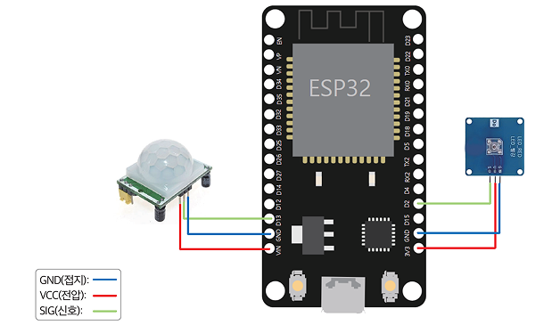
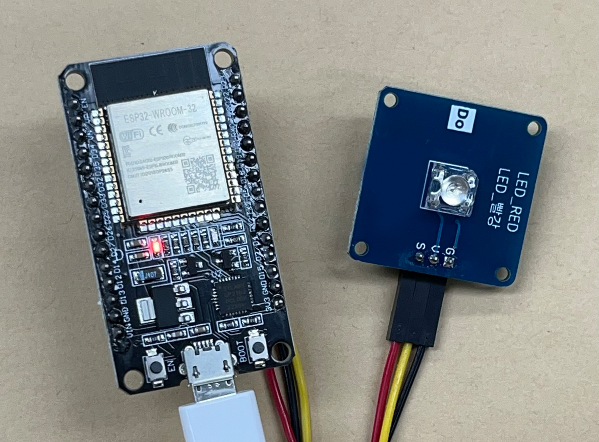
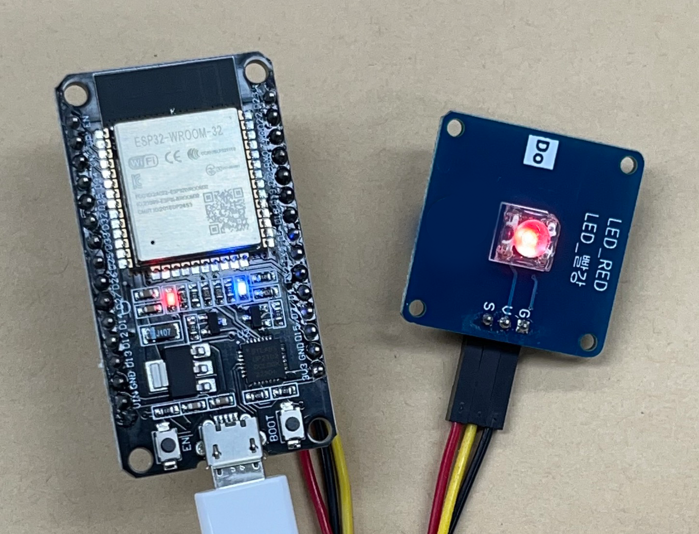

개념 학습
문제 해결을 위한 사물 인터넷 시스템 설계(2)
사물 인터넷 시스템은 피지컬 컴퓨팅 시스템이 수집한 데이터를 네트워크를 통해 서로 주고받으며 작동한다. 그러므로 사물 인터넷 시스템을 설계하기 위해서는 가장 먼저 문제 해결에 적합한 피지컬 컴퓨팅 시스템을 선택하는 것이 중요하다. 문제 해결에 적합한 사물 인터넷 시스템을 설계해 보자.
문제 해결에 적합한 하드웨어를 선택한다.
| 입력 장치 | 사람의 움직임을 감지하는 |
|---|---|
| 출력 장치 | 전등을 켜고 끄는 |
입출력 장치는 마이크로컨트롤러에 연결하여 제어할 수 있다.
ESP32 보드에 인체 감지 센서와 저항이 내장된 LED를 연결하여 회로를 구성해 보자.

인체 감지 센서를 사용하여 사람의 움직임을 감지하면 LED가 켜지고, 사람의 움직임이 없으면 LED가 꺼지는 프로그램은 다음과 같다.
| 1 | from machine import Pin | # 하드웨어 작동을 위한 machine 모듈 준비 |
|---|---|---|
| 2 | import time | # 시간 지연을 위한 time 모듈 준비 |
| 3 | LED = Pin(2, Pin.OUT) | # 2번 핀을 LED의 출력으로 지정하여 변수 할당 |
| 4 | PIR = Pin(13, Pin.IN) | # 13번 핀을 인체 감지 센서의 입력으로 변수 할당 |
| 5 | while True: | # 무한 반복 시작 |
| 6 | if PIR.value() == 1: | # 인체 감지 센서의 값이 1이면(움직임을 감지) |
| 7 | LED.value(1) | # 값을 1(HIGH)로 설정하여 LED 켜기 |
| 8 | else: | # 인체의 움직임이 감지되지 않으면 |
| 9 | LED.value(0) | # 값을 0(LOW)으로 설정하여 LED 끄기 |


파이썬으로 ESP 32 보드와 같은 마이크로컨트롤러를 제어하려면 하드웨어를 제어하기 위한 기능을 제공하는 마이크로파이썬 보드를 설치해야 한다.
인체 감지 센서와 LED
| 개념 | 인체 감지 센서는 적외선을 통해 사람의 움직임을 감지하는 입력 센서이다. |
|---|---|
| 특징 |
|
| 활용 | 사람의 움직임이 감지되면 바람이 나와 손의 물기를 제거해 주는 화장실의 핸드 드라이어에 활용된다. |
| 개념 | LED는 전원을 연결하여 전류가 흐를 때 빛을 발산하는 장치이다. |
|---|---|
| 특징 |
긴 쪽이 +극이고 짧은 쪽이 -극을 나타낸다. 따라서 VCC에 긴 쪽을 연결하고, GND에는 짧은 쪽을 연결한다. |
| 활용 | 신호등, 자동차 헤드라이트, 스마트 가로등, 각종 사인을 표시하는 전광판 등에 사용된다. |
ESP32 보드에 LED와 인체 감지 센서 연결하기
- 인체 감지 센서 연결(입력)
- 1 보드의 GND에 인체 감지 센서의 GND를 연결한다.
- 2 보드의 VIN에 인체 감지 센서의 VCC를 연결한다.
- 3 보드의 D13번 핀에 인체 감지 센서의 SIG를 연결한다.
- LED 연결(출력)
- 1 보드의 GND에 LED의 GND를 연결한다.
- 2 보드의 3V3에 LED의 VCC를 연결한다.
- 3 보드의 D2번 핀에 LED의 SIG를 연결한다.
인체 감지 센서
LED